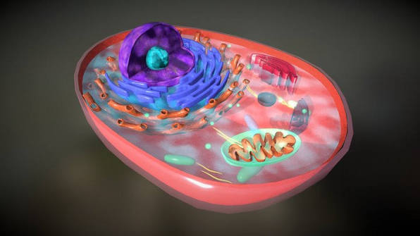
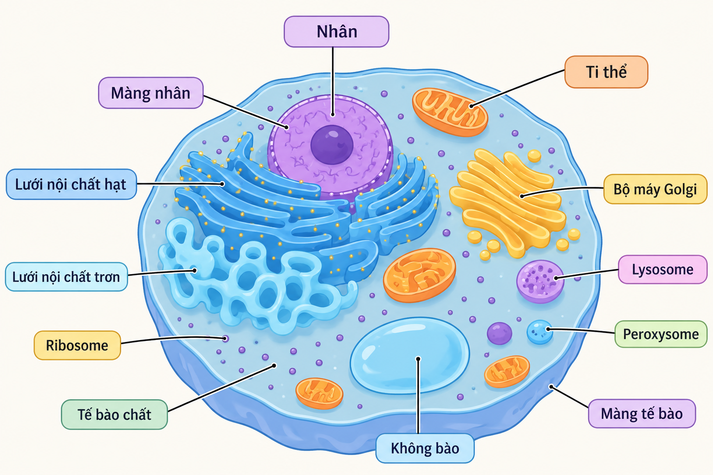
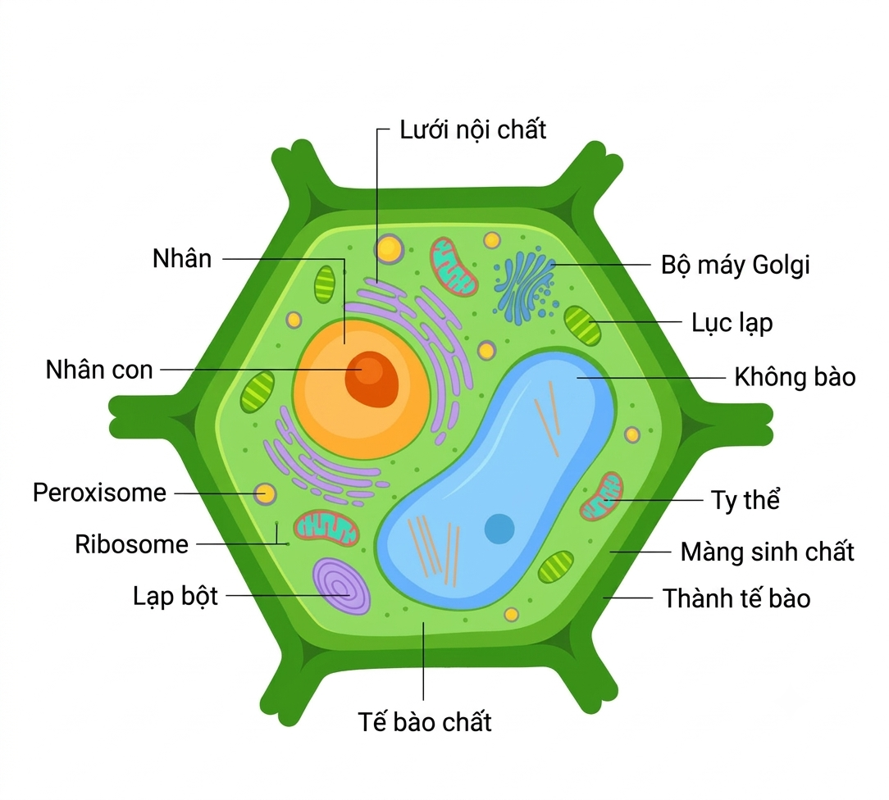
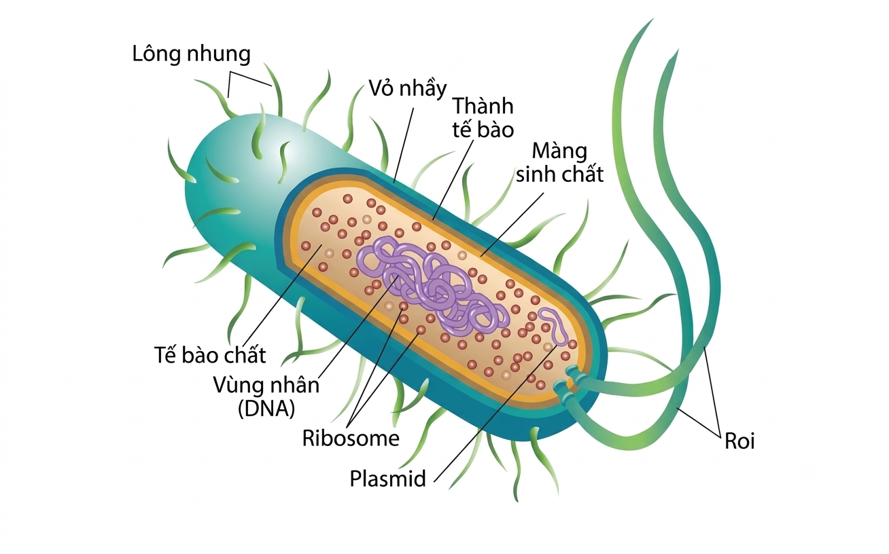

Tế bào nhân thực
Đặc điểm chung · Cấu tạo · So sánh

I. Đặc điểm chung của tế bào nhân thực
- Kích thước lớn, cấu tạo phức tạp.
- Có nhân chính thức được bao bọc bởi màng nhân.
- Có tế bào chất, hệ thống nội màng và nhiều bào quan có màng bao bọc.
- Gồm tế bào động vật, thực vật và nấm.
Mô hình tế bào
Tế bào động vật

Tế bào thực vật

Nhấp vào tên bộ phận để xem cấu tạo & chức năng chi tiết. Nhấp vào hình ảnh sẽ phóng to nhẹ.
II. So sánh tế bào nhân sơ và tế bào nhân thực
1. Điểm giống nhau
- Thành phần cơ bản: Đều được cấu tạo từ 3 thành phần chính gồm màng sinh chất, tế bào chất và vật liệu di truyền (ADN).
- Chức năng sống: Đều thực hiện các quá trình cơ bản như trao đổi chất, sinh trưởng, phát triển và sinh sản.
2. Điểm khác nhau chi tiết
| Đặc điểm | Tế bào nhân sơ | Tế bào nhân thực |
|---|---|---|
| Kích thước | Nhỏ khoảng 1 – 5 µm | Lớn hơn rất nhiều khoảng 10 – 50 µm |
| Cấu tạo nhân | Chưa có màng nhân hoàn chỉnh (chỉ là vùng nhân) | Có màng nhân hoàn chỉnh bao bọc nhân |
| Vật liệu di truyền (ADN) | ADN dạng vòng kép, nằm tự do ở vùng nhân, không liên kết với protein histon | ADN kết hợp với protein tạo thành nhiễm sắc thể (NST) dạng thẳng |
| Hệ thống nội màng | Không có hệ thống nội màng | Có hệ thống nội màng chia tế bào chất thành các xoang và khoang riêng biệt |
| Bào quan có màng | Không có các bào quan có màng bao bọc | Có nhiều bào quan có màng như ti thể, lục lạp, lưới nội chất, bộ máy Golgi... |
| Ribosome | Chỉ có ribosome kích thước nhỏ (70S) | Có ribosome kích thước lớn hơn (80S) và cả ribosome trong ti thể, lục lạp |
| Thành tế bào | Thường cấu tạo bằng peptidoglycan | Xenlulozơ (ở thực vật), kitin (ở nấm), hoặc không có (ở động vật) |
| Khung xương tế bào | Không có hoặc rất thô sơ | Có hệ thống khung xương tế bào phát triển |
| Hình thức phân bào | Phân đôi trực tiếp, không có nguyên phân hay giảm phân | Phân bào phức tạp qua nguyên phân hoặc giảm phân |
| Đại diện sinh vật | Vi khuẩn, vi khuẩn cổ | Nguyên sinh vật, nấm, thực vật và động vật |

III. So sánh tế bào thực vật và tế bào động vật
Điểm giống nhau
- Loại tế bào: Đều là tế bào nhân thực (có màng nhân hoàn chỉnh).
- Cấu tạo cơ bản: Đều gồm màng sinh chất, chất tế bào (tế bào chất), nhân tế bào và các bào quan phổ biến như ti thể, lưới nội chất, bộ máy Golgi, ribosome.
- Hoạt động sống: Đều thực hiện các chức năng sống cơ bản như hô hấp hiếu khí, trao đổi chất, sinh trưởng và phân chia tế bào.
Điểm khác nhau
| Đặc điểm | Tế bào thực vật | Tế bào động vật |
|---|---|---|
| Kích thước và hình dạng | Thường lớn hơn, có hình dạng cố định (hình chữ nhật hoặc hình khối). | Thường nhỏ hơn, hình dạng không cố định (linh hoạt). |
| Thành tế bào (vách tế bào) | Có thành tế bào cấu tạo từ xenlulozo giúp bảo vệ và tạo hình dáng cứng chắc. | Không có thành tế bào. |
| Lục lạp | Có (chứa chất diệp lục giúp thực vật quang hợp tự dưỡng). | Không có (sinh vật dị dưỡng). |
| Không bào | Thường có một không bào trung tâm kích thước lớn. | Không có hoặc chỉ có nhiều không bào nhỏ. |
| Trung tử (Trung thể) | Thường không có (trừ một số thực vật bậc thấp). | Có trung tử tham gia vào quá trình phân chia tế bào. |
| Lysosome | Hiếm gặp hoặc ít rõ rệt (được thay thế bằng các chức năng của không bào). | Có chứa các enzyme tiêu hóa. |
| Chất dự trữ | Tinh bột và dầu. | Glicogen và mỡ. |
| Cách phân chia tế bào | Hình thành vách ngăn ở giữa khi phân chia. | Phân chia bằng cách eo thắt màng sinh chất. |